Unity 2D – Tilemap, Sprity & Tipy
Praktické rady pro práci s 2D grafikou v Unity, nastavení Tilemap, velikosti obrázků, animace a řešení běžných problémů.
Tilemap vs Sprite Renderer
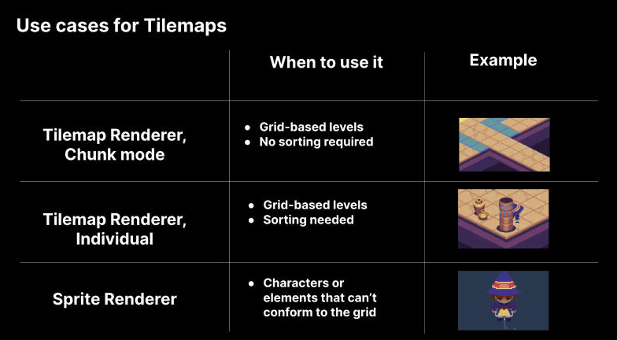
Tilemap
Vykreslení a nastavení barvy dlaždic
Kód funguje pouze pokud je rozdělen do dvou cyklů.
public void GenerateTilemap(int width, int height, Color color)
{
// Smazání všech dlaždic
this.ClearTiles();
for (int x = 0; x < width; x++)
for (int y = 0; y < height; y++)
{
this.Tilemap.SetTile(new(x, y, 0), this.TileBase);
}
for (int x = 0; x < width; x++)
for (int y = 0; y < height; y++)
{
this.Tilemap.SetColor(new(x, y, 0), color);
}
}
Pravidla pro Tilemap
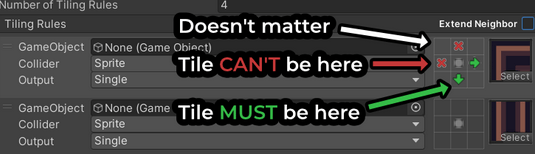
Velikost obrázku
Definice velikostí
| 📏 Rozměr | 💡 Použití | 👁️ Vzdálenost od kamery |
|---|---|---|
| 16x16 px | Ikony, jednoduché UI | Velmi daleko, detail není důležitý |
| 32x32 px | Malé UI prvky, ikony | Velmi daleko |
| 64x64 px | Menší objekty | Střední vzdálenost |
| 128x128 px | Střední objekty | Blízká vzdálenost |
| 256x256 px | Větší objekty, detailní textury | Střední až blízká vzdálenost |
| 512x512 px | Velmi detailní objekty | Blízká vzdálenost |
| 1024x1024 px | Velké objekty, textury | Velmi blízká vzdálenost |
| 2048x2048+ px | Maximální detail | Extrémně blízká vzdálenost |
Používejte mocniny čísla 2 pro optimální výkon.
Nastavení velikosti (PPU)
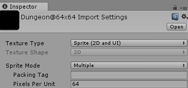
Pixel Per Unit (PPU) určuje, kolik pixelů tvoří jednu jednotku v Unity. Nastavte podle velikosti grafiky pro správné zobrazení.
| 🖼️ Rozměr spritu | ⚙️ PPU | 📏 Výsledek na scéně |
|---|---|---|
| 32x32 px | 32 | 1x1 jednotka |
| 256x256 px | 256 | 1x1 jednotka |
Pro více informací reddit: Jakou velikost spritů použít?
Animace obrázku
Hloubka (Depth) u kostí
Hloubka ovlivňuje pořadí vykreslení Sprite Mesh.
- Otevři
Sprite Editor - Přepni do
Skinning Editor - Nastav hloubku u kostí
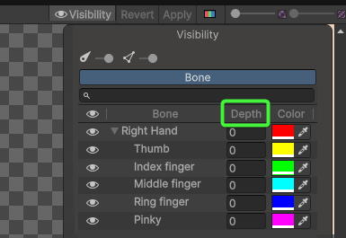
Univerzální Rigging
- Otevři
Sprite Editor - Přepni do
Skinning Editor(aktivujVisibility) - Vytvoř kosti (bones)
- Nastav Geometry a Weights
Pokud se část nevykresluje barevně, zkontroluj nastavení posuvníků:
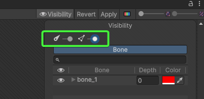
- Zkopíruj rig
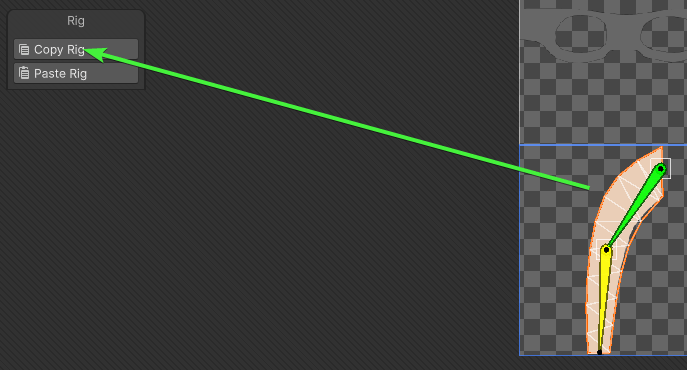
- Otevři nový sprite
- Vlož rig
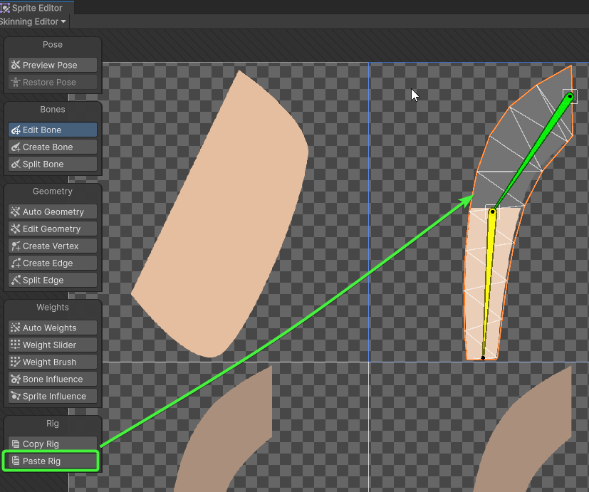
Řešení chyb při vykreslování sprite
Na kameře musí být komponenta
Pixel Perfect Camerapro 2D!
Černé čáry
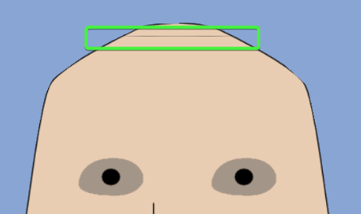
Řešení:
Zkontroluj umístění obrázku
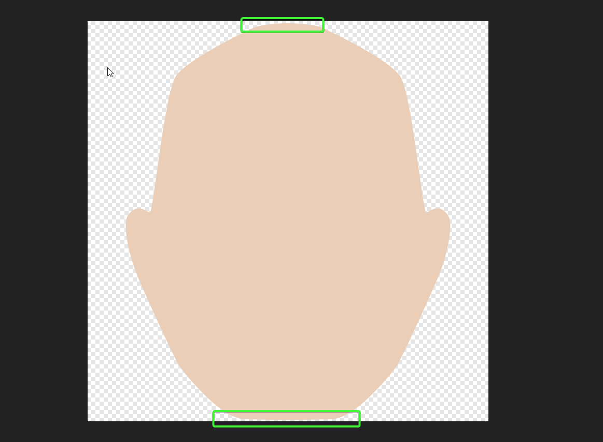
Nastav padding v
TexturePacker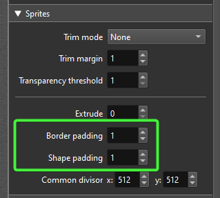
| 🏷️ Typ paddingu | 💡 Popis |
|---|---|
| Border padding | Mezera kolem okrajů celého sheetu |
| Shape padding | Mezera mezi jednotlivými sprites na sheetu |
Zvyš padding, pokud se problém opakuje.
Problikávání
Zkontroluj měřítko v herním okně, že je nastaveno na 1x.
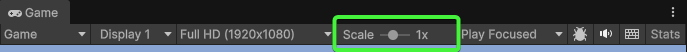